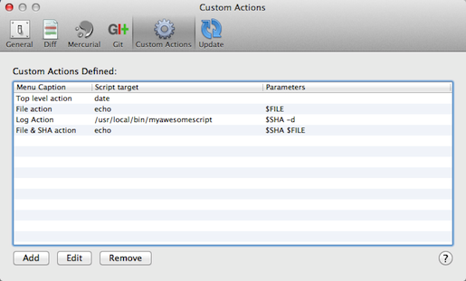
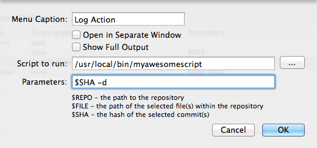

Preferences: Custom Actions

SourceTree allows you to configure your own actions which you can perform through the user interface, meaning that you can expand the functionality of SourceTree with your own scripts / commands if you wish. For example if you have a custom build script, an interface with your continuous integration server, or anything else you can now launch this from inside SourceTree.
The actions you add will appear on various menus in SourceTree under the 'Custom Actions' submenu. Which menus they appear in depends on what parameters you use when setting up the action, see below for details.
When you add a new custom action, here are the options:

Menu Caption: This is the text which will appear as the menu item.
Open in Separate Window: If unchecked (default), the action will run in a modal sheet on the current repository window, and once complete the repository view will be explicitly refreshed. If checked, the action will run in a separate floating window and no views will be refreshed on completion, unless picked up by the auto-refresh which detects file changes.
Show Full Output: If checked, the task window will be expanded to show the console output by default, and the window will not close on its own even on successful completion. If unchecked, only a progress bar will be displayed and the window will be closed automatically on completion, unless there is an error.
Script to Run: Path to the script or command you wish to run. Do not include any parameters in this field. Absolute paths are recommended.
Parameters: The parameters to pass to the script. You can embed literal parameters or use the macros below. Use of macros will also determine which menus the custom action will appear on; all actions appear in the top-level 'Actions > Custom Actions' menu, but only those which use macros will show up in context menus on files and log entries.
- $REPO expands to the path to the repository
- $FILE expands to the path(s) to the selected file(s) within the repository. Using this macro means the action will appear on the context menu in the File Status view, and also in the file list on the log and search views if the $SHA macro is also used.
- $SHA expands to the full commit SHA of the selected log entry. Using this macro means the action will appear on either the context menu for a commit (if $FILE isn't used as well), or on the context menu for the file list for a commit within the log/search views if $FILE is used too.
You should not manually quote any of the macros - they will automatically be quoted to deal with spaces in file names etc. You can use quotes otherwise if you need to for manual parameters.
See also
General Preferences
Diff Preferences
Mercurial Preferences
Git Preferences
Update Preferences